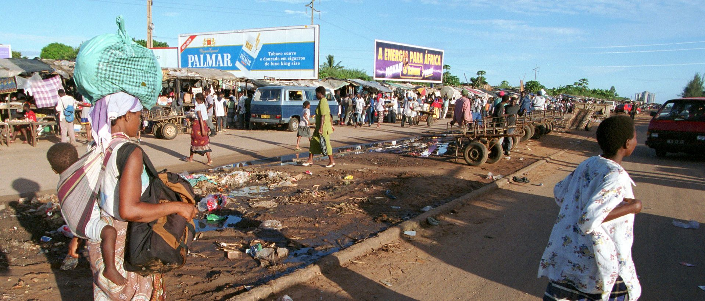

The discovery of LNG reserves in Mozambique in 2010 brought a huge influx of foreign direct investment (FDI) into the country.
How much do you want to know about this subject?
Gas fields in Mozambique
On 18 February 2010, Anadarko Moçambique — a subsidiary of Anadarko Petroleum (bought by Occidental Petroleum in 2019) — discovered a massive natural gas field in the Rovuma Basin off the coast of northern Mozambique. Over the next few years, some of the world’s largest energy corporations flocked to the Cabo Delgado province, where the basin is located. These included corporations such as France’s TotalEnergies SE (which bought Anadarko’s project), the US’ ExxonMobil, and Italy’s ENI, which collaborated with the China National Petroleum Corporation for “oil and gas exploration and production”.
These massive liquefied natural gas (LNG) projects by these corporations hold a potential value of $120-billion — according to Standard Bank Mozambique — with TotalEnergies SE and ExxonMobil in control of the most lucrative concessions. This valuation came at the same time when Mozambique held a rank of 145 out of 155 countries in the Gender-related Development Index, according to the Human Development Report 2009, and ranked 172 out of 182 countries, according to the Human Development Index. The immense find of the natural gas field and these LNG projects were poised to benefit an impoverished Mozambique economically and socially.
What are tax treaties?
A tax treaty is a bilateral (two-party) agreement made by two countries to resolve issues involving double taxation of passive and active income of each of their respective citizens. Income tax treaties generally determine the amount of tax that a country can apply to a taxpayer's income, capital, estate, or wealth. An income tax treaty is also called a Double Tax Agreement (DTA).

The problem
We argue that much of the investment that go to the gas fields in Mozambique has been structured in a way that takes advantage of tax treaties which were signed before this discovery, and contain extremely unfavourable provisions for Mozambique. The contents of these treaties significantly reduces Mozambique’s ability to tax these investments. With a specific focus on withholding taxes (WHTs), we use a method devised by IMF economists Sebastien Leduc and Geerten Michielse to estimate that Mozambique could be losing up to US$ 1.4 billion over the years 2010-2020 as a result of these treaties, in withholding tax alone.
pagina 4
pagina 5